Tresser infiniment.
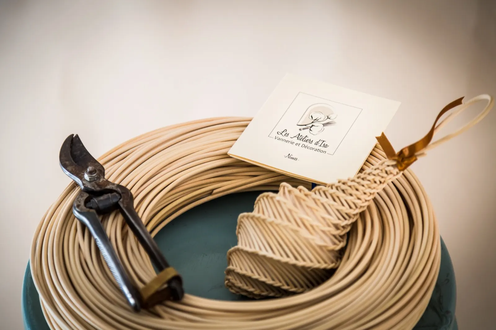
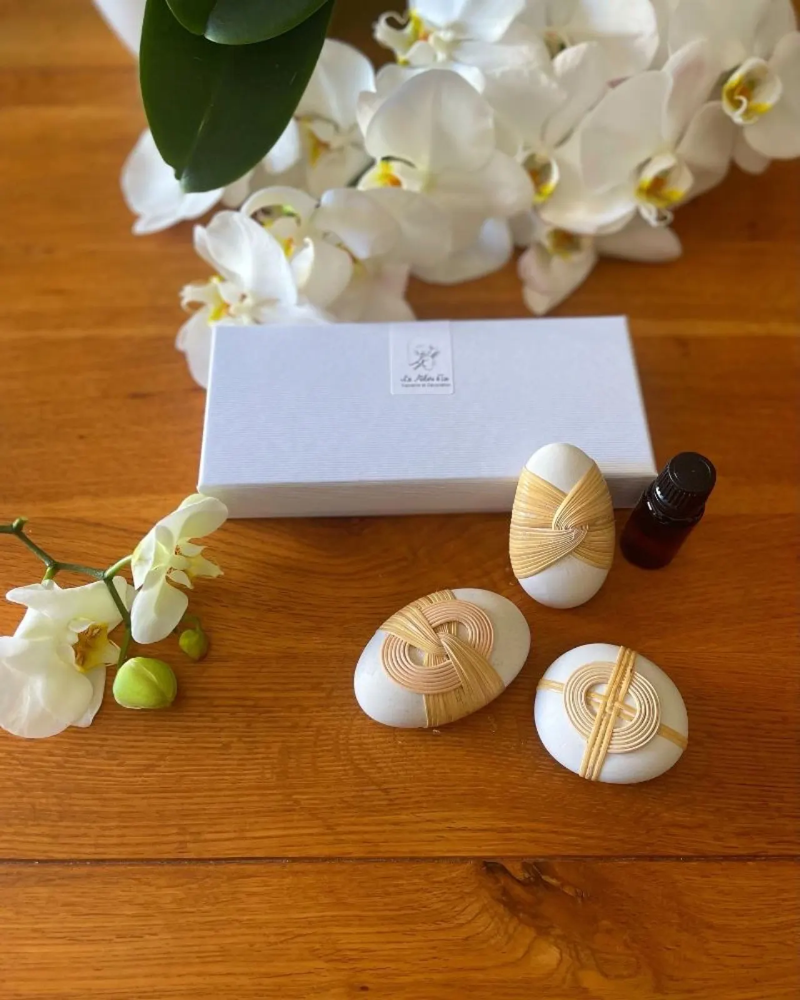
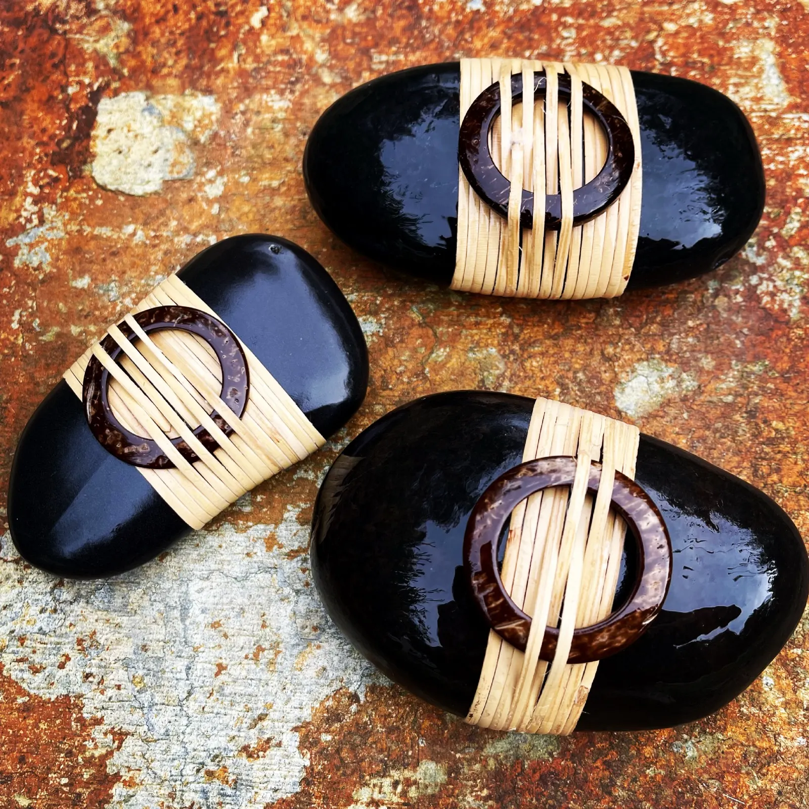
Des créations naturelles pour sublimer votre maison. Isabelle Monnier, vannière à Nîmes : objets de décoration, kits de vannerie à faire vous-même et stages dans mon atelier, au cœur de la garrigue nîmoise.
- Depuis 2015des stages de vannerie dans mon atelier
- Artisanat d’artinscrite aux Ateliers d’Art de France
- Autodidacteformée auprès de vanniers dans toute la France
- France et Europelivraison, tarifs selon la zone
- Dès 90 €livraison gratuite en point relais
Créations personnalisées
Vous trouverez très certainement votre bonheur ! Kits, galets tressés, diffuseurs de parfum, objets déco et tirages d’art, tout est dans la boutique en ligne.
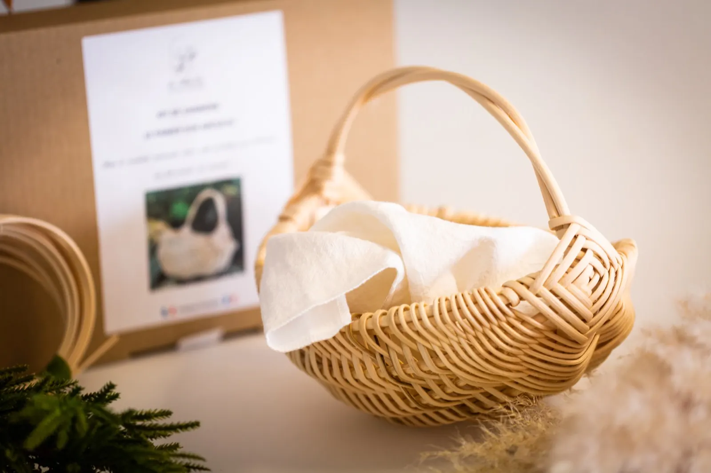
Kits de vannerie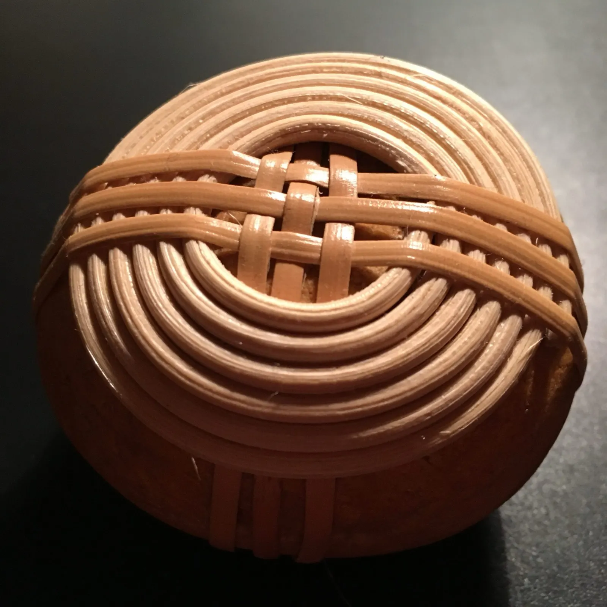
Galets tressés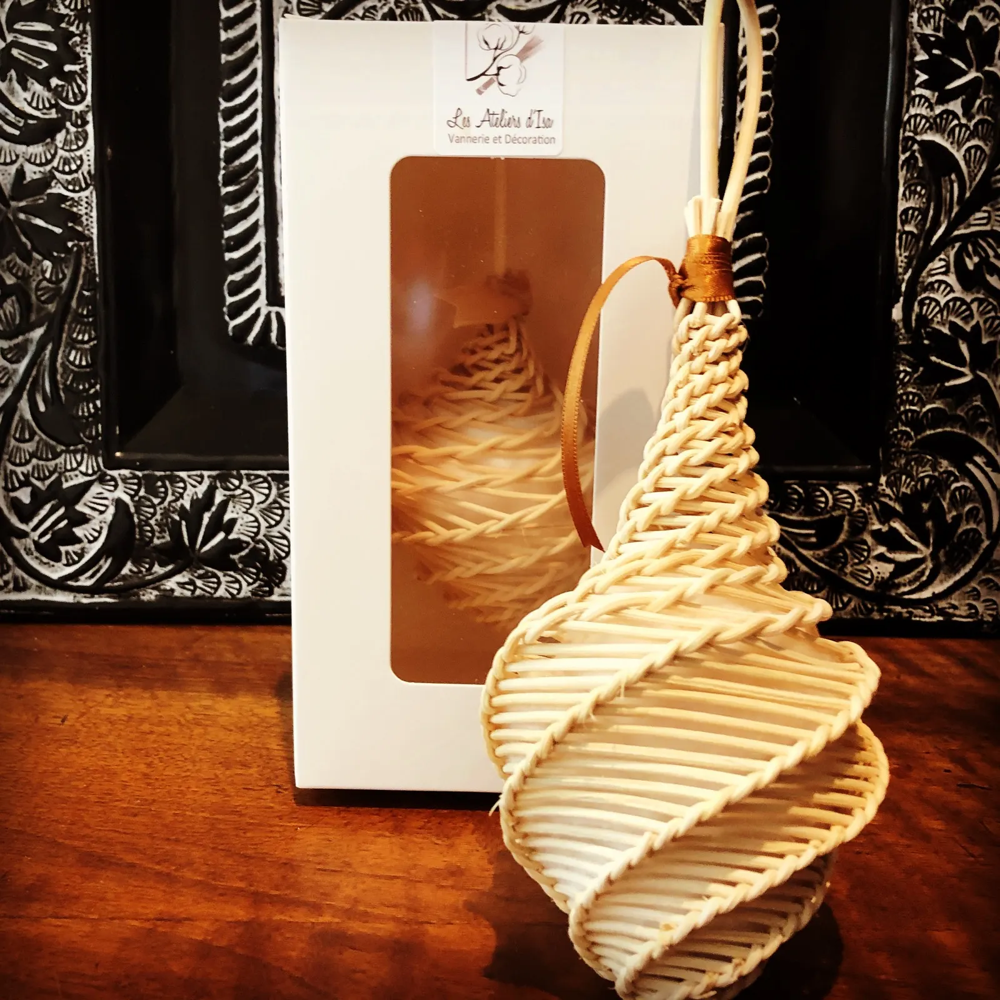
Diffuseurs de parfum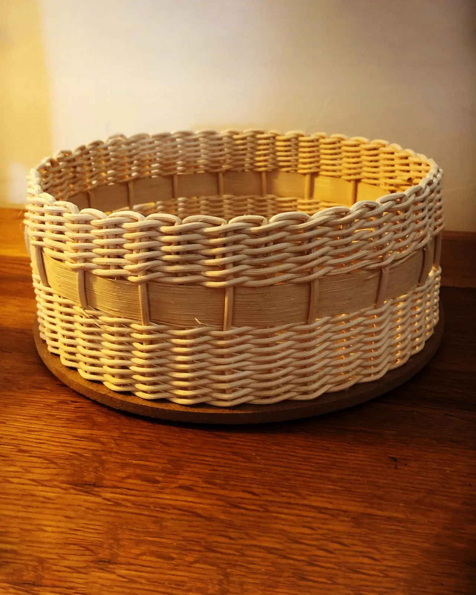
Objets déco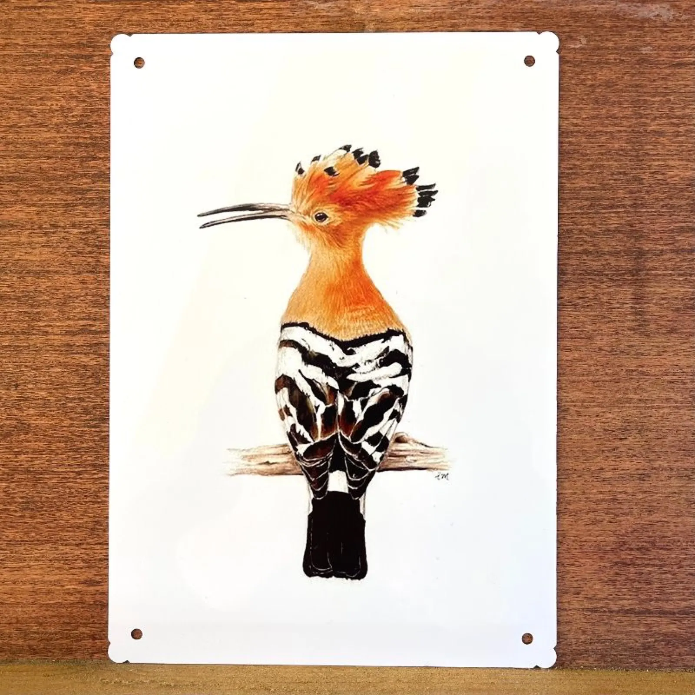
Tirages d’artPaiement sécurisé, livraison en France et en Europe. Livraison gratuite en point relais pour toute commande égale ou supérieure à 90 €.
Toute la boutiqueKits de vannerie DIY
Pour créer vous-même facilement un objet déco en rotin.
- Plateau
- Corbeille droite
- Grande corbeille basse
- Panier sur arceaux
- Mangeoire
- Mangeoire ronde à oiseaux
- Nichoir à oiseaux
- Décorations murales
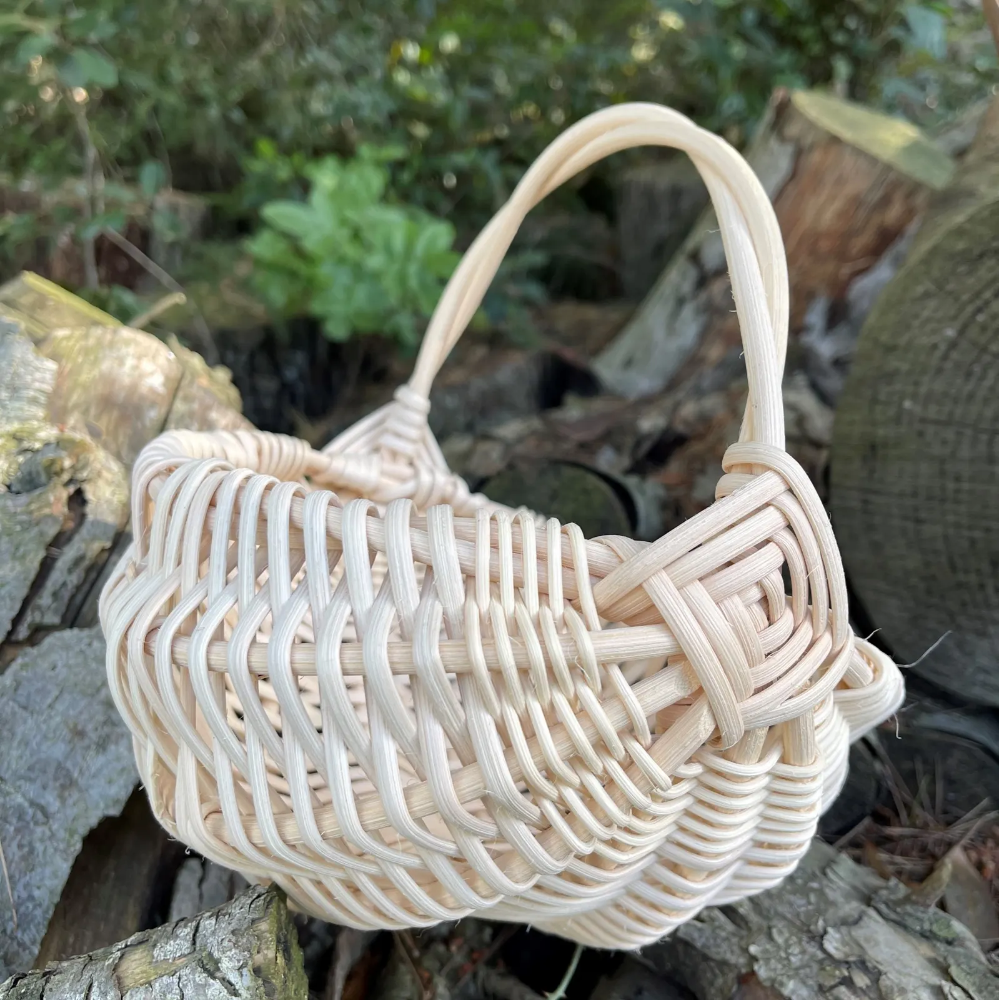
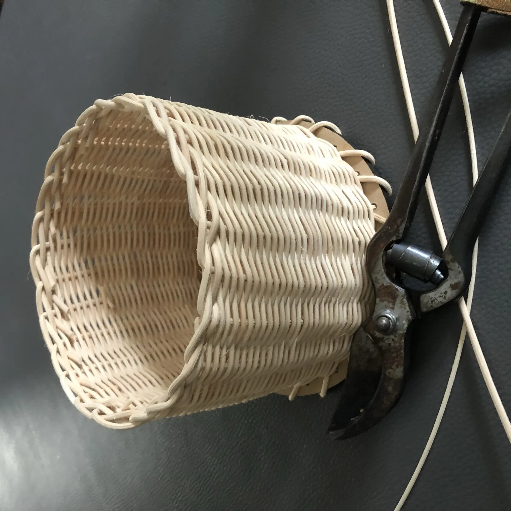
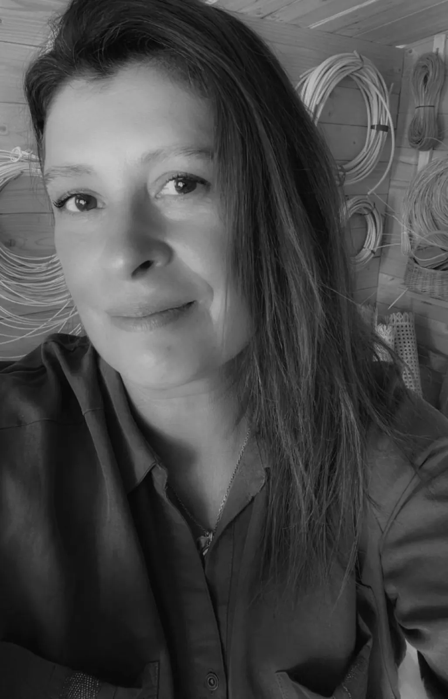
Une vocation née d’une passion
Isabelle Monnier, vannière
Durant quelques années, j’ai appris la vannerie en autodidacte auprès de différents vanniers dans toute la France, pour apprendre les techniques propres à chaque région et le travail sur l’osier, le rotin, le châtaignier, le noisetier, la clématite, le jonc, la ronce…
La vannerie de coton
Amoureuse de la décoration, j’ai mis au point une technique très personnelle : des corbeilles en tissu et en cuir, aussi rigides que de la vannerie dite classique. De la vraie vannerie, adaptée au textile (modèles déposés à l’INPI).
Côté déco
J’adore aussi travailler le cuir, le zinc, le rotin, le cannage, le bois.
Mes corbeilles sont passées dans l’émission « La Maison France 5 », diffusée le 29 septembre 2017, après la venue de Stéphane Thébaud et de son équipe à l’atelier.
Les stages de vannerie de rotin
Depuis 2015, je vous fais découvrir ce savoir ancestral dans mon atelier, au cœur de la garrigue nîmoise (quartier Castanet). Les gestes millénaires du tressage et des entrelacs, dans une grande convivialité.
Vous êtes déjà un groupe d’au moins 4 personnes ? Contactez-moi pour un stage sur mesure : un thème, une date.
Les prochaines dates sont annoncées sur la page des stages, avec un formulaire pour être informé(e) de leur reprise.
Tarifs des stages
- Stage à la journée80 €de 10 h à 17 h, pique-nique à apporter
- Stage d’une demi-journée55 €de 9 h à 12 h 30 ou de 14 h 30 à 18 h
- Mini-stage de 2 heures25 €horaires adaptables
Les tarifs comprennent les matières premières, les supports et le prêt de matériel.
Acompte de 60 € pour une journée, 35 € pour une demi-journée, 15 € pour un mini-stage.
Prochains salons
Retrouvez-moi sur les salons de créateurs et de métiers d’art, pour découvrir mes créations. Les dates sont mises à jour au fur et à mesure.
- Du 7 au 15 novembre 2026
Salon Nimagine
Parc des Expositions, Nîmes (30)
- Du 2 au 6 décembre 2026
Salon Artisa
Grenoble (38)
- Du 9 au 13 décembre 2026
Salon des Créateurs et Artisans d’Art
MEET, Toulouse (31)